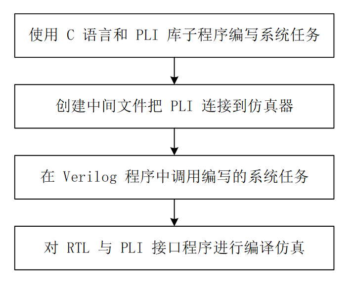

Al realizar diseño digital, a menudo se encuentran situaciones especiales. Las tareas y funciones en Verilog ya no pueden satisfacer las necesidades de simulación, por lo que es necesario personalizar algunas tareas y funciones del sistema. La interfaz de lenguaje de programación (PLI, Program Language Interface) proporciona un conjunto de subrutinas de interfaz para acceder a las estructuras de datos internas del diseño y extraer información del entorno de simulación. Los usuarios pueden llamar a estas subrutinas, personalizar tareas y funciones del sistema, e interactuar con los datos internos del diseño y el entorno del simulador Verilog.
Funcionalidades de PLI
En términos simples, Verilog PLI proporciona un conjunto de funciones en C que los diseñadores pueden invocar para escribir programas de software en C. Al compilar RTL, el programa de software escrito también se integra en el entorno de simulación. Durante la ejecución de la simulación, mediante llamadas a tareas del sistema, se puede acceder dinámicamente a las estructuras de datos en la simulación. Este acceso es bidireccional; no solo se puede leer información de las estructuras de datos del simulador, sino también modificar la información de las estructuras de datos.
Las funcionalidades de PLI son muy potentes; sus usos están limitados solo por la imaginación de los diseñadores.
- PLI permite a los usuarios escribir tareas y funciones de sistema personalizadas en C, que pueden realizar operaciones complejas que Verilog no puede completar.
- Algunas aplicaciones de software, como herramientas de lectura/escritura de archivos y herramientas de cálculo de retardos, también pueden escribirse con PLI.
- PLI puede extraer información de diseño, como la jerarquía de acceso, la interconexión y la cantidad de elementos lógicos de un tipo específico, etc.
- PLI se puede utilizar para escribir programas especializados de visualización de salida, como algunos observadores de formas de onda dedicados, que generan información como interconexiones lógicas, jerarquías y formas de onda de datos.
- PLI puede realizar tareas de monitoreo o tareas de estímulo tediosas.
- PLI puede controlar el proceso de simulación, por ejemplo pausar o salir, para facilitar la depuración.
- Los usos extendidos de PLI también incluyen: herramientas de descarga de programas RAM/ROM, análisis de consumo de energía, interfaz CModel, entorno de co-simulación...
Aquí se resumen las funcionalidades de PLI más utilizadas:
- (1) Implementar la co-simulación entre CModel y el modelo Verilog. Para sistemas relativamente complejos, los desarrolladores a menudo necesitan crear primero un modelo descrito en C que funcione correctamente, y luego reescribirlo módulo por módulo en descripción Verilog.
- (2) Generar estímulos de prueba o realizar verificación directamente. Para estímulos de entrada con grandes volúmenes de datos, o entradas de control más complejas, así como la verificación de datos en entornos específicos, la implementación con PLI tiene más ventajas que Verilog.
- (3) Capturar el proceso y los resultados de la simulación, y mostrarlos de una manera fácil de aceptar para el usuario. Por ejemplo, en algunos módulos de codificación/decodificación, usar efectos de visualización definidos por el usuario facilita la depuración.
- (4) Co-simulación de hardware y software. Por ejemplo, si el diseño incluye una entidad de CPU, el software puede compilarse en código de máquina y cargarse en la ROM correspondiente para realizar una co-simulación.
Versiones de PLI
El desarrollo de PLI ha pasado principalmente por 3 generaciones.
1985-Interfaz TF
La primera generación se denomina interfaz de Tarea/Función (Task/Function), abreviada como interfaz TF. La interfaz TF contiene un conjunto de bibliotecas de funciones en C, todas con el prefijo tf_, definidas en veriuser.h. Estas funciones C generalmente se llaman subrutinas TF, e incluyen principalmente tareas y funciones definidas por el usuario, funciones de utilidad, mecanismos de devolución de llamada y salida de datos.
1989-Interfaz ACC
La segunda generación se denomina interfaz de Acceso (Access), abreviada como interfaz ACC. Las funciones en la interfaz ACC tienen todas el prefijo acc_, definidas en acc_user.h. Las subrutinas ACC se utilizan principalmente para acceder y modificar diversos objetos descritos en Verilog. Las funciones de la biblioteca ACC son una superposición de las funciones de la biblioteca TF, no un reemplazo.
Generalmente, la interfaz PLI se refiere específicamente a las interfaces TF y ACC.
1995-Interfaz VPI
La tercera generación se denomina interfaz de procesos (Verilog Process Interface), abreviada como interfaz VPI. Las subrutinas VPI son una colección de las funcionalidades de las subrutinas TF y ACC, definidas en vpi_user.h.
En comparación con las subrutinas PLI, que son numerosas y desordenadas, VPI resulta especialmente refinado. Dado que PLI no tuvo un estándar unificado en sus inicios y se desarrolló completamente en la práctica, hay cerca de un centenar de funciones de biblioteca PLI de uso común, y básicamente hay que consultar el manual al escribir programas.
Por otro lado, VPI se elaboró con planificación coordinada según ciertos estándares, incorporando muchas ideas de orientación a objetos, y la concisión de las funciones de biblioteca supera con creces a la de PLI. Sin embargo, la estructura de VPI es relativamente compleja y no es fácil de aprender. La mayor debilidad de VPI es que su soporte para simuladores no es amigable.
2003-SystemVerilog y DPI
Como extensión de Verilog, en 2003 se publicó el estándar SystemVerilog, que admite más formas de simulación.
La interfaz DPI (Direct Procee Interface) se convirtió en la interfaz para la interacción entre software y SystemVerilog, y actualmente es la dominante.
En general, usar las interfaces TF y ACC de PLI es suficiente para satisfacer las necesidades de simulación. Este capítulo solo presenta brevemente las interfaces TF y ACC. Las demás interfaces se compartirán con todos cuando ese joven complete sus estudios.
Uso de PLI
Al escribir tareas y funciones de sistema, los usuarios pueden extender el lenguaje Verilog con PLI y programas en C. Los nombres de estas tareas y funciones de sistema definidas por el usuario deben comenzar con el símbolo de dólar '$'. En este caso, una tarea en Verilog equivale a una subrutina. Cuando se llama a una tarea, el flujo de ejecución del simulador salta a la subrutina; al completar la tarea, el flujo de ejecución regresa. Las tareas de Verilog no devuelven un valor, pero pueden tener parámetros formales de entrada, salida y bidireccionales.
Las funciones en Verilog son como las funciones en la mayoría de los lenguajes. Cuando se llama a una función, ejecuta un conjunto de instrucciones y luego devuelve un valor a la instrucción que la llamó.
Flujo de PLI
El flujo básico para completar tareas de sistema definidas por el usuario mediante la interfaz PLI se muestra a continuación.

A continuación se explica con el ejemplo de la tarea de sistema simple $hello_runoob. Cuando se llama a esta tarea de sistema, imprime una línea de cadena: 'Hello Runoob!'.
Escritura de tareas de sistema con PLI
El programa de impresión descrito en C se muestra a continuación, con el archivo nombrado comohello_runoob.c 。
Para explicar el flujo general de uso de PLI, este programa no llama a subrutinas TF/ACC.
Ejemplo
int hello_runoob(){
printf("Hello Runoob! \n");
}
Conexión de PLI con el simulador
Tomando el uso de VCS como ejemplo, compile o cree los archivos relacionados con C que se necesitan durante la compilación de VCS.
Compile simplemente el hello_runoob.c anterior y genere el archivo hello_runoob.o. Preste atención a la ruta relativa.
gcc -c ../tb/hello_runoob.c
Cree un archivo de tabla de enlace reconocible por VCS, con el nombre de archivo hello_runoob.tab, cuyo contenido es el siguiente.
$hello_runoob call=hello_runoob
Llamada a la tarea de sistema en Verilog
En Verilog, llame a $hello_runoob mediante una llamada de tarea de sistema, como se describe a continuación.
Ejemplo
module test ;
initial begin
#10 ;
$hello_runoob;
end
initial begin
forever begin
#100;
if ($time >= 10000) $finish ;
end
end
endmodule
Compilación y simulación de Verilog
Compile el RTL y los archivos intermedios de PLI escritos. Para indicar que se debe enlazar el archivo de tabla de la biblioteca PLI, es necesario especificarlo con el parámetro '-P'. Por ejemplo, en esta simulación se deben agregar los siguientes parámetros en la línea de comandos de VCS (preste atención a la ruta relativa):
-P ../tb/hello_runoob.tab hello_runoob.o
En el resultado de la simulación se puede ver la información impresa; la captura de pantalla es la siguiente.
Haz clic para compartir notas
<p style="font-size:14px;">¡Las notas deben ser una extensión del contenido de este artículo!</p><br> <p style="font-size:12px;"><a href="../tougao.html" target="_blank">Envío de artículos, haga clic aquí</a></p> <p style="font-size:14px;"><a href="./runoob-user-test-intro.html" target="_blank">Cómo obtener el código de invitación de registro</a></p> <h3 class="text-muted"><i class="fa fa-info-circle" aria-hidden="true"></i> ¡Antes de compartir notas, debe <a href=".." class="runoob-pop">iniciar sesión</a>!</h3> <p><a href="./runoob-user-test-intro.html" target="_blank">Cómo obtener el código de invitación de registro</a></p>